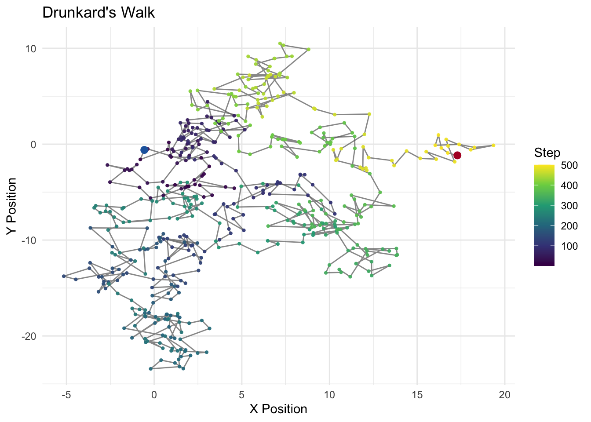
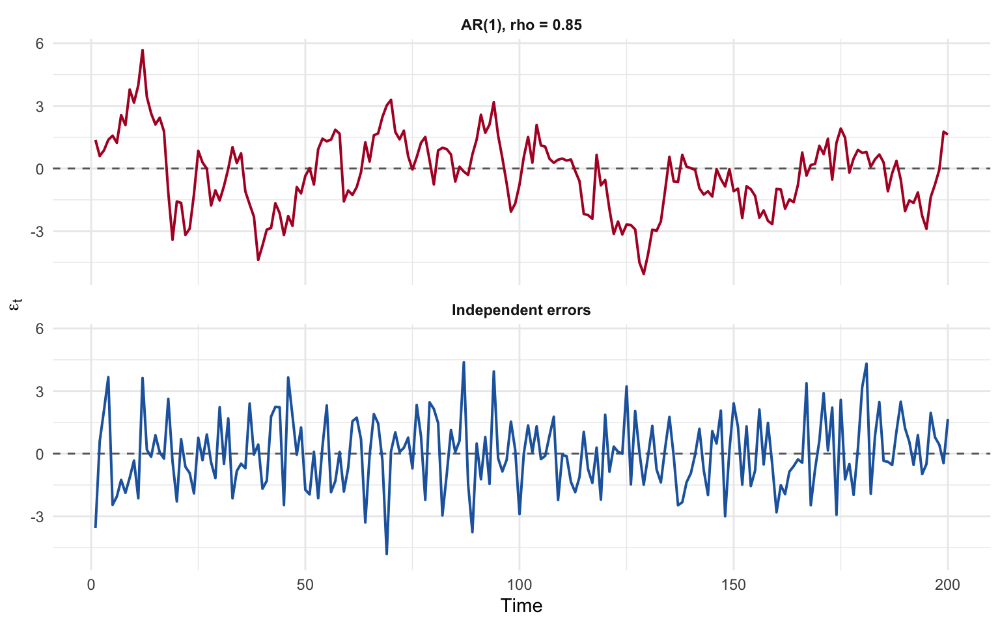
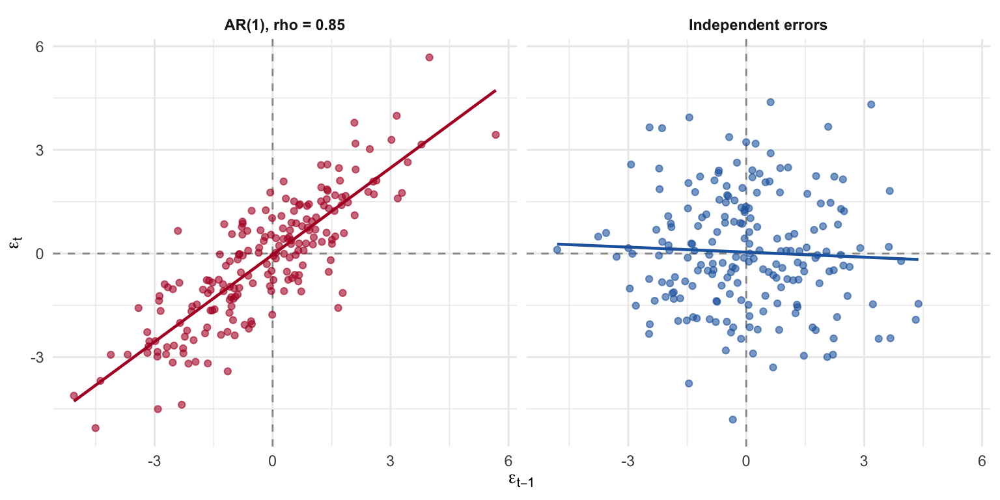
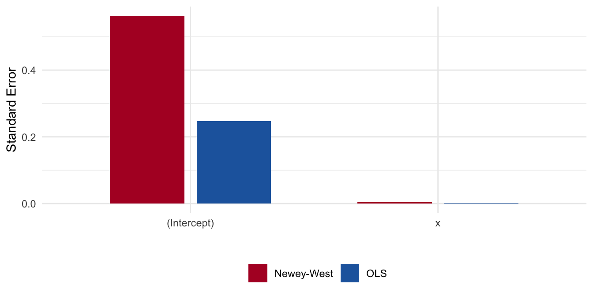

10 Autocorrelation: Time Series and Panel Data
10.1 The Drunkard’s Walk
Imagine a drunkard staggering along a path. At each step, spins a dial walks one step in that direction.
Each step is independent of the previous one, but the position of the drunkard at time \(t\) is the sum of all previous steps. Steps are independent, position is not.
This creates a path that wanders randomly over time, with a clear dependence between the position at time \(t\) and the position at time \(t-1\).
This means that the position at time \(t\) is correlated with the position at time \(t-1\), which is correlated with the position at time \(t-2\), and so on.
This is a simple example of autocorrelation: the value of a variable at one point in time is correlated with its value at another point in time.
This is the defining feature of time series data, and it has important implications for regression analysis.
10.2 Time Series Data
Time series data are generally defined by observations of a single unit (e.g., a country, a person, a company) over a period of time. The defining feature of time series data is that the observations are ordered in time, and the value of the variable at one point in time may be correlated with its value at another point in time. This correlation is known as autocorrelation or serial correlation.
Autocorrelation is quite common – particularly with time series – and we’ll also see, panel – data. The problem again centers on the variance-covariance matrix of errors. With heteroskedasticity, the trouble lived on the diagonal of \(E[\boldsymbol{\epsilon}\boldsymbol{\epsilon}^T]\): the variances were not constant. With autocorrelation, the problem lives in the off-diagonal entries: errors that should be uncorrelated with one another are not.
Recall the variance-covariance matrix of the errors,
\[ E[\boldsymbol{\epsilon}\boldsymbol{\epsilon}^T] = \begin{bmatrix} \text{var}(\epsilon_1) & \text{cov}(\epsilon_1,\epsilon_2) & \text{cov}(\epsilon_1,\epsilon_3) & \cdots & \text{cov}(\epsilon_1,\epsilon_n)\\ \text{cov}(\epsilon_2,\epsilon_1) & \text{var}(\epsilon_2) & \text{cov}(\epsilon_2,\epsilon_3) & \cdots & \text{cov}(\epsilon_2,\epsilon_n)\\ \text{cov}(\epsilon_3,\epsilon_1) & \text{cov}(\epsilon_3,\epsilon_2) & \text{var}(\epsilon_3) & \cdots & \text{cov}(\epsilon_3,\epsilon_n)\\ \vdots & \vdots & \vdots & \ddots & \vdots\\ \text{cov}(\epsilon_n,\epsilon_1) & \text{cov}(\epsilon_n,\epsilon_2) & \cdots & \cdots & \text{var}(\epsilon_n) \end{bmatrix} \]
If the off-diagonal elements are non-zero, Gauss-Markov assumption of independent errors is violated. These off-diagonals are typically zero in cross-sectional data but rarely in panel or time-series data. The reason is relatively intuitive: whatever is left unexplained by the regression – the errors – will relate to one another over time. A shock today will be correlated with a shock tomorrow.
10.3 The AR(1) Process
The most common specification for an autocorrelated error process is the first-order autoregressive, or AR(1), model:
\[ \epsilon_t = \rho\,\epsilon_{t-1} + v_t, \qquad |\rho| < 1 \]
where \(v_t\) is well-behaved: constant variance, no residual autocorrelation, mean zero. The current error is systematically related to its own first lag. This does not mean prior lags are unimportant; they are, but their effects are channeled through \(\epsilon_{t-1}\).
When \(\rho > 0\), successive residuals tend to have the same sign – positive shocks are followed by positive shocks, and the residual plot shows long “runs” of over- and under-prediction. When \(\rho < 0\), the residuals alternate sign. When \(\rho = 0\), we are back in the OLS-works-just-fine world.
NoteThe ARMA Process
The AR(1) model can be generalized by adding a moving average (MA) component. The ARMA(1,1) process is:
\[ \epsilon_t = \rho\,\epsilon_{t-1} + v_t + \theta\,v_{t-1} \]
The AR part (\(\rho\,\epsilon_{t-1}\)) captures persistence — the current error depends on its own past. The MA part (\(\theta\,v_{t-1}\)) captures a short-lived shock — the current error also depends on last period’s innovation. More generally, an ARMA(\(p\), \(q\)) process includes \(p\) autoregressive lags and \(q\) moving average lags:
\[ \epsilon_t = \rho_1\,\epsilon_{t-1} + \cdots + \rho_p\,\epsilon_{t-p} + v_t + \theta_1\,v_{t-1} + \cdots + \theta_q\,v_{t-q} \]
The AR(1) model we focus on in this chapter is the special case ARMA(1,0). In practice, most political science applications stick with pure AR processes, but the ARMA framework is important in time-series methods.
10.3.1 Consequences for OLS
With autocorrelation, OLS is still unbiased but is no longer BLUE:
- The variance matrix of the estimated coefficients is wrong.
- Inferences (t-tests, F-tests, confidence intervals) are distorted.
- \(\hat{\sigma}^2\) is wrong – and typically an underestimate of \(\sigma^2\).
- As a result, we tend to overestimate \(R^2\) and understate standard errors, producing spuriously “significant” findings.
For an AR(1) process, the adjusted estimator of the error variance as
\[ cov(\epsilon_t, \epsilon_{t+s}) = E[\epsilon_t \epsilon_{t+s}] = \sigma^2 \rho \]
\(\rho\) is the autocorrelation coefficient, and \(\sigma^2\) is the variance of regression model errors.
Remember from the heteroskedasticity chapter that the OLS estimator that the covariance matrix of the error terms, under the Gauss-Markov assumptions is,
\[ \Sigma_{\epsilon, \epsilon} = \begin{bmatrix} \sigma^2&\cdots & 0\\ 0&\sigma^2 & 0\\ \vdots & \vdots & \vdots\\ 0&\cdots &\sigma^2\\ \end{bmatrix} \]
But now, let’s declare correlated errors via \(\rho\)
\[ \Sigma_{\epsilon, \epsilon} = \begin{bmatrix} \sigma^2&\sigma^2\rho & \cdots & \sigma^2\rho^{n-1}\\ \sigma^2\rho & \sigma^2 & \cdots & \sigma^2\rho^{n-2}\\ \vdots & \vdots & \ddots & \vdots\\ \sigma^2\rho^{n-1} & \sigma^2\rho^{n-2} & \cdots & \sigma^2\\ \end{bmatrix} \]
which is
\[ \Sigma_{\epsilon, \epsilon} = \sigma^2 \begin{bmatrix} 1&\rho & \cdots & \rho^{n-1}\\ \rho & 1 & \cdots & \rho^{n-2}\\ \vdots & \vdots & \ddots & \vdots\\ \rho^{n-1} & \rho^{n-2} & \cdots & 1\\ \end{bmatrix} \]
It’s key that we all understand the structure of the covariance matrix. With heteroskedasticity, the problem was that the diagonal entries were not constant. With autocorrelation, the problem is that the off-diagonal entries are not zero. These errors are defined by an AR(1) process.
10.3.2 First Order Autoregressive Errors and the Bias of \(\hat{\sigma}^2\)
\[ \epsilon_t = \rho\,\epsilon_{t-1} + v_t, \qquad |\rho| < 1 \]
Recall that the variance is given by \[ \hat{\sigma}^2 = \mathrm{Var}(\epsilon_t) = E[\epsilon_t^2] \]
and
\[ \mathrm{Var}(\rho\,\epsilon_{t-1}) = \rho^2\,\mathrm{Var}(\epsilon_{t-1}) = \rho^2 E[\epsilon_{t-1}^2]. \]
By squaring \(\epsilon_t = \rho\,\epsilon_{t-1} + v_t\) and taking expectations:
\[ E[\epsilon_t^2] = E[(\rho\,\epsilon_{t-1} + v_t)^2] = \rho^2 E[\epsilon_{t-1}^2] + 2\rho E[\epsilon_{t-1} v_t] + E[v_t^2] = \rho^2 E[\epsilon_{t-1}^2] + \sigma^2 \]
Because the correlation between \(\epsilon_{t-1}\) and \(v_t\) is zero, the cross term vanishes.
This gives us a recursive relationship for the variance. Under stationarity, the process has been running long enough that its statistical properties no longer depend on time. In particular, \(E[\epsilon_t^2] = E[\epsilon_{t-1}^2]\) – the variance is the same at every point in time. Denote this common variance by \(\text{Var}(\epsilon_t)\). Substituting….
\[ \text{Var}(\epsilon_t) = \rho^2 \text{Var}(\epsilon_t) + \sigma^2 \]
Collecting terms and solving for \(\text{Var}(\epsilon_t)\):
\[ \text{Var}(\epsilon_t) - \rho^2 \text{Var}(\epsilon_t) = \sigma^2 \quad\Longrightarrow\quad \text{Var}(\epsilon_t)(1 - \rho^2) = \sigma^2 \quad\Longrightarrow\quad \text{Var}(\epsilon_t) = \frac{\sigma^2}{1 - \rho^2} \]
This is why the restriction \(|\rho| < 1\) matters: it says that \(1 - \rho^2 > 0\), so the variance is finite. The process is also said to be stationary as long as \(|\rho| < 1\). As \(\rho \to 1\), the denominator shrinks toward zero and the variance of the errors increases. Notice also that even when \(\rho\) is moderate, the error variance is inflated relative to \(\sigma^2\). For example, with \(\rho = 0.8\), the variance of \(\epsilon_t\) is \(\sigma^2 / 0.36 \approx 2.78\,\sigma^2\).
It’s now useful to think about the terms that constitute the autocorrelated effects in the variance-covariance matrix of error terms, where we started.
At lag 1
\[ \text{cov}(\epsilon_t, \epsilon_{t-1}) = E[\epsilon_t \epsilon_{t-1}] = \frac{\sigma^2 \rho}{1-\rho^2} \]
At lag 2
\[ \text{cov}(\epsilon_t, \epsilon_{t-2}) = E[\epsilon_t \epsilon_{t-2}] = E[[\rho(\rho \epsilon_{t-2} + v_{t-1}) + v_t] \epsilon_{t-2}] = \rho^2 E[\epsilon_{t-2}^2] = \frac{\sigma^2 \rho^2}{1-\rho^2} \]
At lag 3
\[ \text{cov}(\epsilon_t, \epsilon_{t-3}) = E[\epsilon_t \epsilon_{t-3}] = E[[\rho(\rho(\rho \epsilon_{t-3} + v_{t-2}) + v_{t-1}) + v_t] \epsilon_{t-3}] = \rho^3 E[\epsilon_{t-3}^2] = \frac{\sigma^2 \rho^3}{1-\rho^2} \]
And so forth,
\[ E[\epsilon_t \epsilon_{t-k}] = \frac{\sigma^2 \rho^k}{1-\rho^2} \]
10.4 Demonstrating the Bias of \(\hat{\sigma}^2\) Under AR(1) Errors
Recall,
\[ e_t = \epsilon_t - \bar{\epsilon} - \hat{\beta}_1(x_t - \bar{x}), \qquad \hat{\beta}_1 = \frac{\sum(x_t - \bar{x})\epsilon_t}{\sum(x_t - \bar{x})^2} \]
Because \(e_t\) is linear in the \(\epsilon_t\)’s, the expected RSS splits as
\[ E\!\left[\sum_{t=1}^n e_t^2\right] = \underbrace{E\!\left[\sum_{t=1}^n \epsilon_t^2\right]}_{\text{Term 1}} -\underbrace{E\!\left[n\bar{\epsilon}^2\right]}_{\text{Term 2}} -\underbrace{E\!\left[\hat{\beta}_1^2\sum(x_t-\bar{x})^2\right]}_{\text{Term 3}} \]
Term 1 can be written as:
\[ E\!\left[\sum_{t=1}^n \epsilon_t^2\right] = \frac{n\sigma^2}{1-\rho^2} \]
Term 2 requires expanding \(n\bar{\epsilon}^2 = \frac{1}{n}\bigl(\sum_t \epsilon_t\bigr)^2\):
\[ E\!\left[n\bar{\epsilon}^2\right] = \frac{1}{n}\sum_{s=1}^n\sum_{t=1}^n E[\epsilon_s\epsilon_t] = \frac{\sigma^2}{n(1-\rho^2)}\sum_{s=1}^n\sum_{t=1}^n \rho^{|s-t|} \]
Evaluating the double sum:
\[ \sum_{s=1}^n\sum_{t=1}^n \rho^{|s-t|} = n + 2\sum_{k=1}^{n-1}(n-k)\rho^k \approx \frac{2n\rho}{1-\rho} \quad \text{for large } n \]
Substituting back and simplifying yields Term 2 \(\approx \dfrac{2\sigma^2}{(1-\rho)^2(1+\rho)}\), which contributes the \(\tfrac{2}{1-\rho}\) in the numerator.
Term 3 follows from the variance of \(\hat{\beta}_1\) under AR(1) errors:
\[ E\!\left[\hat{\beta}_1^2\sum(x_t-\bar{x})^2\right] = \frac{2\sigma^2\rho}{1-\rho^2} \]
which contributes the \(2\rho\) in the numerator.
Combine.
Collecting the three terms and dividing by \((n-2)\):
\[ E[\hat{\sigma}^2] = \frac{1}{n-2}\cdot\frac{\sigma^2}{1-\rho^2} \left[n - \frac{2}{1-\rho} - 2\rho\right] \]
For large \(n\), \(\tfrac{1}{1-\rho^2}\approx 1\), recovering the expression in the text:
\[ \boxed{E[\hat{\sigma}^2] = \frac{\sigma^2\!\left[n - \tfrac{2}{1-\rho} - 2\rho\right]}{n-2}} \]
When \(\rho > 0\), both correction terms are positive, so
\[ n - \frac{2}{1-\rho} - 2\rho \;<\; n-2 \quad\Longrightarrow\quad E[\hat{\sigma}^2] < \sigma^2 \]
OLS underestimates the true error variance. As \(\rho\to 1\), the term \(\tfrac{2}{1-\rho}\to\infty\) and the underestimation becomes arbitrarily large.
If \(\rho < 0\), \[ E[\hat{\sigma}^2] = \frac{\sigma^2[n - 0 - 0]}{n-2} = \frac{n\sigma^2}{n-2} \]
This recovers the standard unbiased OLS variance estimator. \(\checkmark\)
10.5 A Visual Demonstration and Detecting Autocorrelation
Let’s simulate a time series where the errors follow an AR(1) process and compare it to one where they do not. This is the clearest way to see what autocorrelation looks like.
library(ggplot2)
set.seed(42)
n <- 200
rho <- 0.85
# AR(1) errors
eps_ar <- numeric(n)
eps_ar[1] <- rnorm(1, 0, 1)
for (t in 2:n) {
eps_ar[t] <- rho * eps_ar[t - 1] + rnorm(1, 0, 1)
}
# iid errors,v
eps_iid <- rnorm(n, 0, sd(eps_ar))
sim_df <- data.frame(
t = rep(1:n, 2),
eps = c(eps_ar, eps_iid),
type = rep(c("AR(1), rho = 0.85", "Independent errors"), each = n)
)
## plot both
ggplot(sim_df, aes(x = t, y = eps, color = type)) +
geom_hline(yintercept = 0, linetype = "dashed", color = "grey40") +
geom_line(linewidth = 0.7) +
scale_color_manual(values = c("AR(1), rho = 0.85" = az_red,
"Independent errors" = az_blue)) +
facet_wrap(~ type, ncol = 1) +
labs(x = "Time", y = expression(epsilon[t]), color = "") +
theme_minimal() +
theme(legend.position = "none",
strip.text = element_text(face = "bold"))
The AR(1) series wanders – it spends stretches above zero, then long stretches below. The independent series crosses zero constantly. This “wandering” is the prototypical signature of autocorrelation, and it’s exactly what will show up in the residuals of a regression fit to time-series data with an AR(1) error structure.
10.5.1 The Lagged Residual Plot
Another useful diagnostic is to plot \(\epsilon_t\) against \(\epsilon_{t-1}\). Under the null of no autocorrelation, the points should fill all four quadrants roughly equally. Under positive autocorrelation, they cluster along the 45-degree line.
lag_df <- data.frame(
e_t = c(eps_ar[-1], eps_iid[-1]),
e_lag = c(eps_ar[-n], eps_iid[-n]),
type = rep(c("AR(1), rho = 0.85", "Independent errors"), each = n - 1)
)
ggplot(lag_df, aes(x = e_lag, y = e_t, color = type)) +
geom_hline(yintercept = 0, linetype = "dashed", color = "grey60") +
geom_vline(xintercept = 0, linetype = "dashed", color = "grey60") +
geom_point(alpha = 0.6, size = 1.5) +
geom_smooth(method = "lm", se = FALSE, linewidth = 0.8) +
scale_color_manual(values = c("AR(1), rho = 0.85" = az_red,
"Independent errors" = az_blue)) +
facet_wrap(~ type) +
labs(x = expression(epsilon[t - 1]), y = expression(epsilon[t]), color = "") +
theme_minimal() +
theme(legend.position = "none",
strip.text = element_text(face = "bold"))`geom_smooth()` using formula = 'y ~ x'
10.6 Detecting Autocorrelation
10.6.1 The Runs Test
The runs test is a nonparametric check for independence. It counts the number of “runs” – consecutive sequences of positive or negative residuals – and compares this count to what we’d expect under independence.
Let \(n_1\) = the number of positive residuals, \(n_2\) = the number of negative residuals, and \(k\) = the total number of runs. Under the null of independence,
\[ E(k) = \frac{2 n_1 n_2}{n_1 + n_2} + 1, \qquad \text{Var}(k) = \frac{2 n_1 n_2 (2 n_1 n_2 - n)}{n^2 (n - 1)} \]
and \(k\) is approximately normal in large samples. If the observed \(k\) is far from \(E(k)\), we reject the null. Positively autocorrelated residuals produce too few runs; negatively autocorrelated residuals produce too many.
10.6.2 The Durbin-Watson Statistic
The Durbin-Watson statistic is the workhorse test for first-order autocorrelation:
\[ d = \frac{\sum_{t=2}^{n}(e_t - e_{t-1})^2}{\sum_{t=1}^{n} e_t^2} \]
In large samples, \(d \approx 2(1 - \hat{\rho})\), so:
- \(d \approx 2\): no first-order autocorrelation.
- \(d \to 0\): strong positive autocorrelation.
- \(d \to 4\): strong negative autocorrelation.
Durbin and Watson derived lower and upper bounds, \(d_L\) and \(d_U\), that depend on the sample size and number of regressors:
- \(d < d_L\) → reject the null; evidence of positive autocorrelation.
- \(d_L < d < d_U\) → inconclusive.
- \(d_U < d < 4 - d_U\) → do not reject.
- \(4 - d_U < d < 4 - d_L\) → inconclusive.
- \(d > 4 - d_L\) → reject the null; evidence of negative autocorrelation.
Several assumptions are baked in: an intercept must be present, errors are assumed normal, lagged dependent variables cannot appear in the model, and there can be no missing values.
# Fit a regression to our simulated AR(1) data
x <- 1:n
y_ar <- 2 + 0.05 * x + eps_ar
y_iid <- 2 + 0.05 * x + eps_iid
fit_ar <- lm(y_ar ~ x)
fit_iid <- lm(y_iid ~ x)
cat("=== Durbin-Watson tests ===\n\n")=== Durbin-Watson tests ===cat("AR(1) errors:\n")AR(1) errors:print(dwtest(fit_ar))
Durbin-Watson test
data: fit_ar
DW = 0.33758, p-value < 2.2e-16
alternative hypothesis: true autocorrelation is greater than 0cat("\nIndependent errors:\n")
Independent errors:print(dwtest(fit_iid))
Durbin-Watson test
data: fit_iid
DW = 2.0779, p-value = 0.6849
alternative hypothesis: true autocorrelation is greater than 0The AR(1) model returns a Durbin-Watson statistic far below 2, with a tiny p-value; the iid model sits close to 2, as expected.
10.6.3 Generalized Least Squares
If the off-diagonals of \(E[\boldsymbol{\epsilon}\boldsymbol{\epsilon}^T]\) are the problem, and we know what the off-diagonals look like, we can transform the data to remove them. This is generalized least squares (GLS).
Recall from the heteroskedasticity chapter that the GLS strategy is always the same. We specified \(\boldsymbol{\Omega}\), a matrix whose diagonal entries \(\omega_{ii}\) represent the relative variance of each observation. We then defined a transformation matrix \(\boldsymbol{\rho}\) with the property that \(\boldsymbol{\rho}^T\boldsymbol{\rho} = \boldsymbol{\Omega}^{-1}\). Premultiplying the regression equation by \(\boldsymbol{\rho}\) produced transformed errors \(\boldsymbol{\epsilon}^* = \boldsymbol{\rho}\boldsymbol{\epsilon}\) with the desired property: \(E(\boldsymbol{\epsilon}^*\boldsymbol{\epsilon}^{*T}) = \sigma^2 \mathbf{I}\).
With heteroskedasticity, \(\boldsymbol{\Omega}\) was diagonal – the off-diagonals were already zero, but the diagonal entries were non-constant (different observations had different variances). The fix was to divide each observation by the square root of its relative variance. The transformation matrix \(\boldsymbol{\rho}\) was diagonal too: \(\rho_{ii} = 1/\sqrt{\omega_{ii}}\), where \(\omega_{ii}\) is the relative variance of observation \(i\). Noisy observations (large \(\omega_{ii}\)) got downweighted; precise ones were left alone.
With autocorrelation, the algebra is the same but the geometry is different. The problem now is the off-diagonals of \(\boldsymbol{\Omega}\). We need to effectivly undo the correlation betwen the neighboring observations by applying a weighting structure.
- Write \(E[\boldsymbol{\epsilon}\boldsymbol{\epsilon}^T] = \sigma^2 \boldsymbol{\Omega}\).
- Find a matrix \(\mathbf{D}\) such that \(\mathbf{D}^T\mathbf{D} = \boldsymbol{\Omega}^{-1}\).
- Premultiply the entire regression equation by \(\mathbf{D}\): the transformed errors \(\boldsymbol{\epsilon}^* = \mathbf{D}\boldsymbol{\epsilon}\) satisfy \(E(\boldsymbol{\epsilon}^*\boldsymbol{\epsilon}^{*T}) = \sigma^2 \mathbf{D}\boldsymbol{\Omega}\mathbf{D}^T = \sigma^2 \mathbf{I}\).
- Run OLS on the transformed data. The result is BLUE.
Write \(E[\boldsymbol{\epsilon}\boldsymbol{\epsilon}^T] = \sigma^2 \boldsymbol{\Omega}\). For an AR(1) process,
\[ \boldsymbol{\Omega} = \frac{1}{1-\rho^2} \begin{bmatrix} 1 & \rho & \rho^2 & \cdots & \rho^{n-1}\\ \rho & 1 & \rho & \cdots & \rho^{n-2}\\ \rho^2 & \rho & 1 & \cdots & \rho^{n-3}\\ \vdots & \vdots & \vdots & \ddots & \vdots\\ \rho^{n-1} & \rho^{n-2} & \cdots & \rho & 1 \end{bmatrix} \]
We need a matrix \(\mathbf{D}\) such that \(\mathbf{D}\mathbf{D}^T = \boldsymbol{\Omega}^{-1}\). For AR(1),
\[ \mathbf{D} = \begin{bmatrix} \sqrt{1-\rho^2} & 0 & 0 & \cdots & 0\\ -\rho & 1 & 0 & \cdots & 0\\ 0 & -\rho & 1 & \cdots & 0\\ \vdots & \vdots & \vdots & \ddots & \vdots\\ 0 & 0 & \cdots & -\rho & 1 \end{bmatrix} \]
Premultiplying the regression equation by \(\mathbf{D}\) gives the transformed model
\[ \mathbf{D}\mathbf{y} = \mathbf{D}\mathbf{X}\boldsymbol{\beta} + \mathbf{D}\boldsymbol{\epsilon} \quad\Longleftrightarrow\quad \mathbf{y}^* = \mathbf{X}^*\boldsymbol{\beta} + \boldsymbol{\epsilon}^* \]
with \(E[\boldsymbol{\epsilon}^*\boldsymbol{\epsilon}^{*T}] = \sigma^2 \mathbf{I}\). OLS on the starred variables is now BLUE. The interior rows of \(\mathbf{D}\) implement the familiar “quasi-differencing” transformation: \(y^*_t = y_t - \rho y_{t-1}\), and similarly for \(\mathbf{X}\).
10.6.4 Feasible GLS
GLS assumes \(\rho\) is known, which is almost never true. Feasible GLS (FGLS) estimates it:
- Estimate the regression by OLS and save the residuals, \(e_t\).
- Regress \(e_t\) on \(e_{t-1}\) to get \(\hat{\rho}\).
- Build \(\mathbf{D}\) using \(\hat{\rho}\) and run GLS.
The Cochrane-Orcutt procedure iterates this: after running GLS, re-compute the residuals, re-estimate \(\hat{\rho}\), and repeat until \(\hat{\rho}\) stops changing.
# Step 1: OLS residuals
e <- residuals(fit_ar)
# Step 2: estimate rho from lagged residuals
rho_hat <- coef(lm(e[-1] ~ e[-n] - 1))
cat("Estimated rho =", round(rho_hat, 3),
" (true value = ", rho, ")\n\n", sep = "")Estimated rho =0.834 (true value = 0.85)# Step 3: quasi-difference and re-fit
y_star <- y_ar[-1] - rho_hat * y_ar[-n]
x_star <- x[-1] - rho_hat * x[-n]
fit_fgls <- lm(y_star ~ x_star)
cat("=== OLS estimates (ignoring autocorrelation) ===\n")=== OLS estimates (ignoring autocorrelation) ===print(round(summary(fit_ar)$coefficients, 4)) Estimate Std. Error t value Pr(>|t|)
(Intercept) 2.4322 0.2476 9.8244 0
x 0.0434 0.0021 20.3268 0cat("\n=== FGLS estimates (quasi-differenced) ===\n")
=== FGLS estimates (quasi-differenced) ===print(round(summary(fit_fgls)$coefficients, 4)) Estimate Std. Error t value Pr(>|t|)
(Intercept) 0.3605 0.1449 2.4884 0.0137
x_star 0.0462 0.0072 6.3857 0.0000The point estimates from OLS and FGLS are similar – OLS is unbiased, after all – but the OLS standard errors are badly understated. FGLS gives us honest inference.
10.6.5 Newey-West Standard Errors
A different strategy is to leave the coefficients alone but correct the standard errors directly. Newey-West standard errors estimate the off-diagonal covariances from the data. This is the autocorrelation analogue of White’s robust standard errors for heteroskedasticity.
ols_se <- sqrt(diag(vcov(fit_ar)))
nw_se <- sqrt(diag(NeweyWest(fit_ar, lag = 4, prewhite = FALSE)))
comparison <- data.frame(
Estimate = round(coef(fit_ar), 4),
OLS_SE = round(ols_se, 4),
NeweyWest = round(nw_se, 4)
)
comparison Estimate OLS_SE NeweyWest
(Intercept) 2.4322 0.2476 0.5627
x 0.0434 0.0021 0.0043The Newey-West standard errors are substantially larger than the naive OLS ones, reflecting the lost information from correlated errors.

10.7 Higher-Order and Conditional Heteroskedasticity
The AR(1) story generalizes. FGLS can be applied with AR(\(m\)) processes (with more off-diagonals to model) and, more ambitiously, conditional heteroskedasticity can itself be modeled. ARCH (autoregressive conditional heteroskedasticity) and GARCH (generalized ARCH) models allow the variance of the errors to depend on past squared errors – a form of heteroskedasticity driven by the autocorrelation structure. These are common in financial time series, where volatility clusters.
10.8 Autocorrelation, Revisted
Autocorrelation is the time-series analogue of heteroskedasticity: the diagonal of the error covariance matrix is still a problem, but now the off-diagonals are too. The consequences are familiar – OLS is unbiased but inefficient, and the reported standard errors understate uncertainty. The remedies track those from the previous chapter:
- Detection: plot residuals over time, plot \(e_t\) against \(e_{t-1}\), run a Durbin-Watson test, or use a runs test.
- Model: if you believe an AR(1) story, use FGLS (or Cochrane-Orcutt) to transform the data so the transformed errors are iid.
- Correct: if you’d rather not commit to a specific error process, leave the coefficients alone and use Newey-West (HAC) standard errors.
The right choice depends on how confident you are in the error model. FGLS is more efficient if the AR(1) assumption is correct; Newey-West is more robust if we’re unsure.
10.9 Panel Data
Panel data are common in political science. Unlike time-series data, multiple units are observed at multiple points in time. Panel data go by a variety of names. Longitudinal data follows a panel structure, but typically units are observed over a long period of time. These designs are common in developmental psychology, for instance, where a unit might be a child observed throughout development. Time Series Cross Sectional (TSCS) data are observed over a shorter time span, but with many units. A panel survey is a specific type of panel data where the same individuals are surveyed repeatedly over time.
The repeated cross-section (RCS) design is a cousin of the panel design: different units are observed at each time point, but the same variables are measured. This design is common in public opinion research, where a new sample of respondents is surveyed every month or year. The RCS, however, does not have the same autocorrelation structure because the same units are not repeatedly observed.
Panel data create challenges for inference because of autocorrelation.
Autocorrelated errors might exist in the ways we discussed; they may also exist due to stable unit effects.
Let’s think about the problem of autocorrelation and dynamic relationships in a slightly different manner.
- Units should have correlated errors over time, because observation is repeated.
- Dynamic relationships between variables should correct for these correlated errors.
- This involves the distinction between contemporaneous and lagged effects, as well as time-invariant and time-varying covariates.
NoteFixed vs. Dynamic Effects; Time-Invariant vs. Time-Varying Predictors
A fixed (or static) effect is the contemporaneous association between \(x\) and \(y\) at the same point in time — e.g., how income this year relates to vote choice this year. A dynamic effect involves temporal ordering: how \(x\) at time \(t-1\) influences \(y\) at time \(t\). Dynamic models use lagged predictors to establish temporal precedence, a necessary (but not sufficient) condition for causal inference.
A time-invariant predictor is a characteristic of the unit that does not change across waves — e.g., race, sex, or country of origin. These variables only vary between units. A time-varying predictor changes within a unit over time — e.g., income, approval ratings, or policy positions. These variables vary both between and within units.
The distinction matters because time-invariant predictors are collinear with unit fixed effects and are absorbed (eliminated) by the within-transformation. Dynamic models that include lagged dependent variables can also introduce bias when stable unit effects are present, as we will see below.
10.9.1 The Cross-Lagged Panel Model
Let’s consider a classic example of one of the more popular approaches to dynamic panel analysis is the cross-lagged panel model (CLPM), introduced by Campbell and Stanley (1963) and extended by Kenny (1975). The CLPM leverages temporal structure of panel data to investigate reciprocal relationships between variables over time: does \(x\) at time \(t-1\) predict \(y\) at time \(t\), and vice versa?
The model is a system of simultaneous equations with lagged predictors:
\[ \begin{aligned} y_{it} &= \alpha_{y} + \beta_{yy}y_{it-1} + \beta_{xy}x_{it-1} + \varepsilon_{y,it}\\ x_{it} &= \alpha_{x} + \beta_{xx}x_{it-1} + \beta_{yx}y_{it-1} + \varepsilon_{x,it} \end{aligned} \]
The \(\beta_{yy}\) and \(\beta_{xx}\) are autoregressive parameters — how much does a variable predict itself over time? The \(\beta_{xy}\) and \(\beta_{yx}\) are the cross-lagged parameters — the dynamic effects of interest. The appeal of the CLPM is its intuitive structure: it directly formalizes the question “does \(x\) lead to changes in \(y\)?”
10.9.1.1 Bias from Stable Unit Effects
The critical limitation of the CLPM is that it does not account for stable unit effects — time-invariant characteristics of each individual that influence both \(x\) and \(y\) across all waves. When these exist, the cross-lagged estimates are biased.
To see why, decompose each observed variable into a stable trait and a time-varying component:
\[ \begin{aligned} x_{it} &= \mu_x + \eta_{x,i} + \omega_{x,it} \\ y_{it} &= \mu_y + \eta_{y,i} + \omega_{y,it} \end{aligned} \]
where \(\eta_{x,i}\) and \(\eta_{y,i}\) are time-invariant random intercepts (the “between-person” components), and \(\omega_{x,it}\) and \(\omega_{y,it}\) are time-varying “within-person” deviations.
Now consider the cross-lagged estimator. The CLPM estimates:
\[ \hat{\beta}_{xy} = \frac{\text{Cov}(x_{it-1}, y_{it})}{\text{Var}(x_{it-1})} \]
Substituting the decomposition into the numerator:
\[ \begin{aligned} \text{Cov}(x_{it-1}, y_{it}) &= \text{Cov}(\eta_{x,i} + \omega_{x,it-1},\; \eta_{y,i} + \omega_{y,it})\\ &= \underbrace{\text{Cov}(\eta_{x,i}, \eta_{y,i})}_{\text{trait--trait}} + \underbrace{\text{Cov}(\eta_{x,i}, \omega_{y,it})}_{\text{trait--state}} + \underbrace{\text{Cov}(\omega_{x,it-1}, \eta_{y,i})}_{\text{state--trait}} + \underbrace{\text{Cov}(\omega_{x,it-1}, \omega_{y,it})}_{\text{true dynamic}} \end{aligned} \]
Only the last term — \(\text{Cov}(\omega_{x,it-1}, \omega_{y,it})\) — is the dynamic cross-lagged effect we are after. The first term, \(\text{Cov}(\eta_{x,i}, \eta_{y,i})\), is the covariance between stable traits: it is the primary source of bias and can be large when \(x\) and \(y\) are both highly stable over time. The CLPM conflates these between-person and within-person effects, potentially showing a “dynamic” relationship where none exists.
The same logic applies to the autoregressive parameters:
\[ \hat{\beta}_{xx} = \frac{\text{Var}(\eta_{x,i}) + 2\,\text{Cov}(\eta_{x,i}, \omega_{x,it}) + \text{Cov}(\omega_{x,it-1}, \omega_{x,it})}{\text{Var}(x_{it-1})} \]
When \(\text{Var}(\eta_{x,i})\) is large relative to \(\text{Var}(\omega_{x,it})\) — i.e., most of the variation is between-person rather than within-person — the autoregressive estimate is inflated. This connects directly to the \(\hat{\sigma}^2\) bias proof from earlier in the chapter: including a lagged dependent variable in the presence of unmodeled unit effects introduces a correlation between the regressor and the error term, biasing the OLS estimate.
ImportantStable Unit Effects and the CLPM
The CLPM does not separate between-person differences (stable traits) from within-person dynamics (time-varying states). When both \(x\) and \(y\) exhibit high stability over time, the cross-lagged and autoregressive parameters become an amalgam of within- and between-person effects. The cross-lagged estimate \(\hat{\beta}_{xy}\) may appear significant not because \(x\) causes changes in \(y\), but simply because individuals who tend to score high on \(x\) also tend to score high on \(y\) — a between-person association masquerading as a within-person dynamic.
Extensions like the random intercept CLPM (RI-CLPM; Hamaker et al., 2015) address this by explicitly modeling \(\eta_{x,i}\) and \(\eta_{y,i}\) as random intercepts, partitioning the variance into between- and within-person components before estimating the cross-lagged paths.
10.9.2 Multilevel Models
Let’s now step back from modeling dynamic relationships, since we’ve seen that the unit effect can bias our estimates. Let’s now talk about modeling heterogeneity across units. This is the domain of multilevel models (MLMs), also known as hierarchical linear models, mixed effects models, or random effects models.
Multilevel data structures are incredibly common in political science. I’ll reference the multilevel model components in a few ways. Sometimes I’ll say level-1 and level-2 (and level-3, level-4, etc). Typically, unit will correspond to the level-1 observation (e.g., country-year, person-wave, person-region, etc). That is, “unit” is the lowest nested level. I’ll refer to “cluster” as the higher nesting level (i.e., level 2). For instance, if the data are country-year observations, then the observation (i.e., unit) is nested within country (i.e., cluster). Please ask if my explanation confuses you. In some cases, a simple convention makes for awkward explanations, in which case I try to adopt a more natural description.
If the classical linear regression equation is,
\[ y_{j,i}=\beta_0+\beta_1 x_{j,i}+e_{j,i} \]
where \(y\) is an observation nested within a country. Then, we may not actually believe that the coefficients are fixed in this regression model. Perhaps the intercept in this equation varies across regions. A common technique to deal with this problem is to calculate a unique mean for each country,
\[ y_{j,i}=\beta_0+\beta_1 x_{j,i}+\sum_j^{J-1} \gamma_j d_j+ e_{j,i} \]
\(d_j\) denotes a dummy variable, specified for \(J-1\) countries. This is somewhat inaccurately called a fixed effects model, since the regression parameters are constrained to a specific value. We will talk more about this model over the coming weeks – it is quite common in political science – but an alternative approach is to assume that the regression coefficients are not fixed, but instead are drawn from some probability distribution. Now,
\[ y_{j,i}=\beta_{0,j}+\beta_1 x_{j,i}+ e_{1,j,i} \]
Now, instead of \(J-1\) dummies, we model the intercept as drawn from a probability density; a common one, of course, is the normal.
\[ \beta_{0,j}=\gamma_0+e_{2,j} \]
\[ e_{2,j} \sim N(0, \sigma^2) \]
Or, we could just compactly write this as
\[ \beta_{0,j}\sim N(\gamma_0, \sigma^2) \]
In other words, we think of the model as existing on two levels. At the unit level, we can estimate the linear regression models. But, there may be added heterogeneity across \(j\) clusters – here, countries. This is now captured in the second stage, in which we allow the intercept to vary across \(j\) units. We can extend this model to include factors that predict the level-2 observations.
Gelman and Hill (2009, 238-239) note that we might envision this two-stage model as simply two sets of estimates.
At level 1, we have:
\[ y_{j,i}=\beta_{0}+\beta_1 x_{j,i}+ e_{1,j,i} \]
Call this the observation nested within a country.
At level 2 we might specify,
\[ y_{j}=\gamma_{0}+\gamma x_{j}+ e_{2,j} \]
In this second stage, we might predict the country mean on \(y\) with time-invariant country-level covariates. This two-stage approach may reveal the ecological fallacy. Perhaps country-level covariates (or averages) have a different effect than unit-level predictors.
The second-stage equation is the country-level mean on the dichotomous dependent variable. The first-stage equation is then a logit model. This should be an intuitive way to understand the multilevel model. However, manually estimating these two stages can be incorporated into a single stage. The key is to recognize the nesting structure in the data. An observation is nested within a country, a country might be nested in a region, etc. Likewise, students are nested within schools, schools are nested within districts. Or, candidates are nested within race, races are nested within election year.
I find it most useful to actually view the data. So, in a two-level multilevel model:
| y | I | J | \(\bar{Y}_j\) |
|---|---|---|---|
| 1 | 1 | 1 | 2 |
| 3 | 2 | 1 | 2 |
| 3 | 3 | 2 | 3.5 |
| 4 | 4 | 2 | 3.5 |
Note that for the four observations, they are nested in two clusters. We could formulate a regression model for the four observations; we could also formulate a regression model for the country-level means (assuming more individuals).
10.9.2.1 Building the Random Effects Model
First, let’s note some limitations of the fixed effects model. We have to add \(J-1\) dummy variables to the model. An equivalent approach is to just remove the \(j\)-level means from \(y\).
\[ (y_{j,i}-\bar{y}_j)=\beta_{0}+\beta_1 x_{j,i}+ e_{i} \]
Why is this identical to the dummy variable approach (assuming a continuous dependent variable)? We could extend this further,
\[ (y_{j,i}-\bar{y}_j)=\beta_{0}+\beta_1 (x_{j,i}-\bar{x}_j)+ e_{i} \]
This is sometimes called the within effects estimator; it is the linear effect of \(x\) on \(y\) removing any variation that exists with respect to the level-two indicator.
Thus, you should see that while this is not necessarily mathematically problematic, we are treating the level-two variation as largely a nuisance term. Most folks who estimate fixed effects models don’t bother interpreting the fixed effects coefficients. Often, they’re not even presented in academic publications.
Second, we might wish to know how much other effects in our model vary across units. For instance, we could examine whether there is heterogeneity in the unit-level effects of \(x\) (\(\beta_1\) above). Of course we could generate interactions between our dummies and these independent variables, but notice how quickly the data expand as \(N\) increases. An alternative is to view parameters as non-constant – i.e., random effects – that follow some distribution.
Let’s use the two-stage formulation to establish an alternative parameterization. First, what is the problem with the two-stage formulation?
Recall the assumption that \(cov(e_i, e_j)=0, \forall i\neq j\)? Or the assumption that \(e_{j,i}\) are independent and identically distributed? Or, the assumption that the off-diagonal elements in the variance-covariance matrix of errors in the regression equation are zero? These all are really one and the same, and they’re likely violated if we have clear “clustering” in our data. If, for example, we have:
| y | I | J | \(\bar{Y}_j\) |
|---|---|---|---|
| 1 | 1 | 1 | 2 |
| 3 | 2 | 1 | 2 |
| 3 | 3 | 2 | 3.5 |
| 4 | 4 | 2 | 3.5 |
We probably shouldn’t assume that the errors between observations 1 and 2 are independent (they come from the same unit); nor should we assume the errors between 3 and 4 are independent. In an applied setting, if we have TSCS data observed over time – each country is listed with multiple observations – we shouldn’t assume that the errors are independent within each country. Or, if we have 10 schools, each paired with 1000 students, the students within the school probably have a lot in common, which translates to a more complicated error process.
In the two-stage formulation, we don’t ever correct for this process. In fact, all we are doing is recognizing that there is underlying level-2 heterogeneity. In fact, we could correct for this problem of clustering, while also modeling underlying level-2 heterogeneity, while also not needing to include at least \(J-1\) additional parameters.
At this point, I’m going to modify my indexing to note the nesting structure. In addition to being consistent with Gelman and Hill (2009), it’s a more accurate way to represent the multilevel nature of the data. Now,
\[ \begin{aligned} y_i &= b_{0,j[i]}+e_{1,i}\\ b_{0,j} &= \omega_0+e_{2,j[i]}\\ e_{1,i} &\sim N(0, \sigma_1^2)\\ e_{2,j[i]} &\sim N(0, \sigma_2^2) \end{aligned} \]
There are no predictors; only variation modeled across two levels – \(i\) nested within \(j\) and variation across \(j\). This is called a “random intercept model.” In particular it’s called the analysis of variance. It’s really no different from the ANOVA formulation you’ve already learned. Here, just envision units nested within treatment conditions. This just separates the variation into between and within units – i.e., between and within conditions. We might also write this in a single “reduced form” equation.
\[ \begin{aligned} y_i &= \omega_0+e_{1,i}+e_{2,j[i]} \end{aligned} \]
In other words, the variation in \(y\) is a function of between and within variation, such that
\[ var(y_{j[i]})=var(e_{1,j[i]})+var(e_{2,j}) \]
or just
\[ \sigma^2_{(y_{j[i]})}=\sigma^2_{i}+\sigma^2_{{j[i]}} \]
Do you now see the similarity to ANOVA, where \(SS_T=SS_B+SS_W\)? Let’s then extend this model, where intercepts vary across level-two units and we have predictors that predict both levels.
\[ \begin{aligned} y_i &= b_{0,j[i]}+b_{1} x_i+e_{1,i}\\ b_{0,j} &= \omega_0+\omega_1 x_{j[i]}+e_{2,j[i]}\\ e_{1,i} &\sim N(0, \sigma_1^2)\\ e_{2,j[i]} &\sim N(0, \sigma_2^2) \end{aligned} \]
\(x_{j[i]}\) consists of variables that vary within \(J\) level-two observations; \(x_j\) consists of variables that only vary between level-two observations. We might manually construct these “between” and “within” variables. For instance, we could include
\[ x_{within}=x_{j}-\bar{x}_{j[i]} \]
\[ x_{between}=\bar{x}_{j[i]} \]
These variables are orthogonal and they capture something different – the variation between \(j\) levels and the variation within \(j\) levels. Then,
\[ \begin{aligned} y_{j[i]} &= b_{0,j[i]}+b_{1} x_{within}+e_{1,i}\\ b_{0,j[i]} &= \omega_0+\omega_1 x_{between}+e_{2,j[i]}\\ e_{1,i} &\sim N(0, \sigma_1^2)\\ e_{2,j[i]} &\sim N(0, \sigma_2^2) \end{aligned} \]
These are all “random intercept” models, because only the intercept parameter is modeled to vary across \(j\) levels. It is conceivable the model is even more complex, such that the level-1 parameter(s) may also vary across level-2 units.
NoteThe Random Coefficients Model
The random intercept model can be extended by allowing the slope to vary across level-2 units as well:
\[ \begin{aligned} y_i &= b_{0,j[i]}+b_{1,j[i]}x_i+e_{1,i}\\ b_{0,j[i]} &= \omega_0+e_{2,j[i]}\\ b_{1,j[i]} &= \omega_1+e_{3,j[i]} \end{aligned} \]
In reduced form: \(y_i = \omega_0 + e_{2,j[i]} + (\omega_1 + e_{3,j[i]})x_i + e_{1,i}\). Now three error terms capture: (1) unit-level residual variation, (2) heterogeneity in the intercept, and (3) heterogeneity in the slope.
Two key points:
- If you allow the slope to vary, you should almost always allow the intercept to vary too — if the effect of \(x\) on \(y\) differs across clusters, the baseline level of \(y\) likely does as well.
- The covariance \(\text{cov}(e_{2,j[i]}, e_{3,j[i]})\) should be modeled. Forcing it to zero assumes the intercept and slope vary independently across clusters, which is rarely realistic.
With level-2 covariates, the model becomes:
\[ \begin{aligned} y_i &= b_{0,j[i]}+b_{1,j[i]}x_i+e_{1,i}\\ b_{0,j[i]} &= \omega_0+\omega_1 x_{j[i]} +e_{2,j[i]}\\ b_{1,j[i]} &= \phi_0+\phi_1 x_{j[i]}+e_{3,j[i]} \end{aligned} \]
The \(\phi_1 x_{j[i]}\) term produces a cross-level interaction: how does the within-cluster effect of \(x\) change across levels of a between-cluster covariate?
TipWhen to Use Multilevel Models
The key is any data structure where observations are nested within clusters, so that within-cluster errors are likely correlated.
- TSCS designs. Country-year observations nested within countries (\(i\) = country-year, \(j\) = country).
- Panel data. Person-wave observations nested within individuals (\(i\) = person-wave, \(j\) = person).
- Cross-sectional data. Individuals nested within regions (\(i\) = person, \(j\) = region).
- Rolling cross-sections. Individuals nested within interview periods (\(i\) = person, \(j\) = time). If the time component is long enough, estimate a time-series model at level 2 (Weber and Lebo 2015).
- Experimental designs. Subjects nested within treatment conditions — especially useful for within-subject designs, mixed-effects designs, and estimating heterogeneity in treatment effects.
10.9.2.2 A Continuum
There are a few ways to think of the random-effects multilevel model. Think of two models anchoring the poles of a continuum. At one extreme is a no pooling model. This is the fixed effects model above, in which each level-2 unit has a unique mean value. At the other end of the continuum is the complete pooling model. This is the regression model with no level-2 estimated means. Instead, we assume the level-2 units completely pool around a common intercept (and perhaps slope). Formally, compare
\[ y_{j,i}=\beta_0+\sum_j^{J-1} \gamma_{j} d_j+ e_{j,i} \]
to
\[ y_{j,i}=\beta_0+ e_{j,i} \]
Note that each \(\gamma\) value allows us to predict a unique mean – and there is no common pooling around a particular value. Instead, we assume each level-2 unit is quite different.
In the second case, all level-2 values assume the same mean value \(\beta_0\). This also seems incorrect, in that we assume no heterogeneity. There is a compromise between these two approaches, a partial pooling model; this is the random-effects model. Let’s see why.
\[ \begin{aligned} y_{j[i]}=b_{0,j[i]}+e_{1,i} \end{aligned} \]
In this model, we shall estimate each \(b_0\) (for each level-2 unit), with the following formula (Gelman and Hill 2009):
\[ \begin{aligned} b_{0,j}=\frac{y_j\times n_j/\sigma^2_y+y_{all}\times 1/\sigma^2_{b_0}}{n_j/\sigma^2_y+ 1/\sigma^2_{b_0}} \end{aligned} \]
This is why this estimate is a compromise: the first part of the numerator represents the movement away from a common mean. Note that as \(n_j\) increases (the group size), the estimate is pulled further from the common mean (which of course is what’s on the right in the numerator).
It’s worth parsing this a bit further. Note the following characteristics:
- As \(n_j\) increases, the estimate of the mean is influenced more by the group than by a common mean. As \(n_j\) decreases – so small groups – the formula allows for a stronger likelihood that the estimate pools around a single value.
- As the within-group variance increases, the group mean is pulled towards the pooled mean. This also makes sense – we should be more confident in the group mean if there isn’t much within-group variation. The reason the denominator is here is to standardize the value of the group mean.
- As the between-group variance increases, the common mean exerts a smaller impact. This is because the larger the variation between groups, the less likely it is that all level-2 means pool around a common mean. This again should make sense – we should be more confident in the common pooled mean if there isn’t much between-group variation. The reason the denominator is here is to standardize the value of the common mean.
- The values in the numerator are then weighted by the variation between and within level-2 units.
Another useful statistic is an indicator of how much the total variance is a function of the level-2 variance, or the level-1 variance. This is called the intra-class correlation.
\[ ICC=\sigma^2_{b_0}/[\sigma^2_{b_0}+\sigma^2_{y}] \]
Recall,
\[ \sigma^2_{all}=\sigma^2_{b_0}+\sigma^2_{y} \]
Thus, the estimate is an estimate of how much of the total variation in \(y\) is a function of variation between level-2 units, relative to within level-1 units. Note the similarities here to ANOVA and how we estimate the proportion of variance explained by the treatment (or \(R^2\)), for instance.
10.9.3 Some Practical Advice
Consistent with Gelman and Hill (2009), I want to elaborate on several practical pieces of advice to consider prior to estimating a multilevel model. Let’s discuss these before actually estimating these models.
- The ICC should decrease as you include level-2 predictors. Intuitively, this should make some sense. As we include covariates that account for an increasing proportion of the between-group variance, then we should observe a decrease in the ICC if level-2 predictors are included.
- Interpretation of the level-2 expected values (i.e., the group means) is based on a compromise between the pooled and no-pooling models. It is not the same value one will observe in a fixed-effects model. Why?
- It’s okay to plot uncertainty in the expected group means, but do not misstate notions of “statistical significance.” It is wrong to ignore grouping variables that are not different from zero. Gelman and Hill provide a nice description on p. 270 of why this reasoning is incorrect. But, just from a pure null-hypothesis testing perspective, it makes little sense. A failure to reject a null is not an endorsement of the null. Even if a vast majority of the group means are not different from zero, this does not provide any evidence to switch to a complete pooling model, for instance.
- If we estimate a regression model with a dummy for every level-2 unit and predictors, the model is not identified because the variables will be collinear (Gelman and Hill 2009, 269). They are not perfectly collinear in the random-effects model, because of the compromise between the common mean and the group mean.
- If there is a suspicion of clustering/level-2 variation, it almost always makes sense to estimate the random-effects model, because we will see if the multilevel model converges on the pooled model, based on the size of the ICC.
10.9.4 Estimation Using the lme4 Package
The completely pooled model is the classic linear regression model estimated using lm.
lm(y ~ x)Assuming d is a variable corresponding to a level-2 identifier, the no-pooling model is
lm(y ~ x + factor(d) - 1)factor(d) simply tells the model that d is a factor variable – a categorical variable that is assigned a numeric value and then subtracts 1, since we can only have \(d-1\) dummies. Thus, the model is just including the dummies.
There are a handful of great multilevel packages in R. One of the older packages is the nlme package. The lme4 package is probably the most popular maximum-likelihood package for estimating multilevel models. The package – lme4 – was developed by Douglas Bates and elaborated on in Pinheiro and Bates (2000), Mixed Effects Models in S and S-PLUS.
# lmer(y ~ x + (1 | d))The syntax is identical, with the exception of the rightmost term. This denotes the clustering. Here, 1 – recall this is just the intercept – is nested within variable d. In the next section we will estimate some of these models.
10.9.5 Summary
I’ve started this section from a more theoretical level, in order to demonstrate the general problems that ensue with autocorrelation. It’s always worthwhile to sit down and write out exactly what you would like to estimate, before actually estimating an autocorrelation corrected model, like a multilevel model.
As I’ve suggested, the multilevel model is useful in the following circumstances: (1) our data are hierarchically structured, (2) we wish to model relations at multiple levels, (3) we are concerned about correlated errors, due to “clustering” in either time or space, and (4) we anticipate heterogeneity in covariate and/or treatment effects.
Campbell, Donald T., and Julian C. Stanley. 1963. Experimental and Quasi-Experimental Designs for Research. Boston: Houghton Mifflin.
Kenny, David A. 1975. “Cross-Lagged Panel Correlation: A Test for Spuriousness.” Psychological Bulletin 82 (6): 887–903.